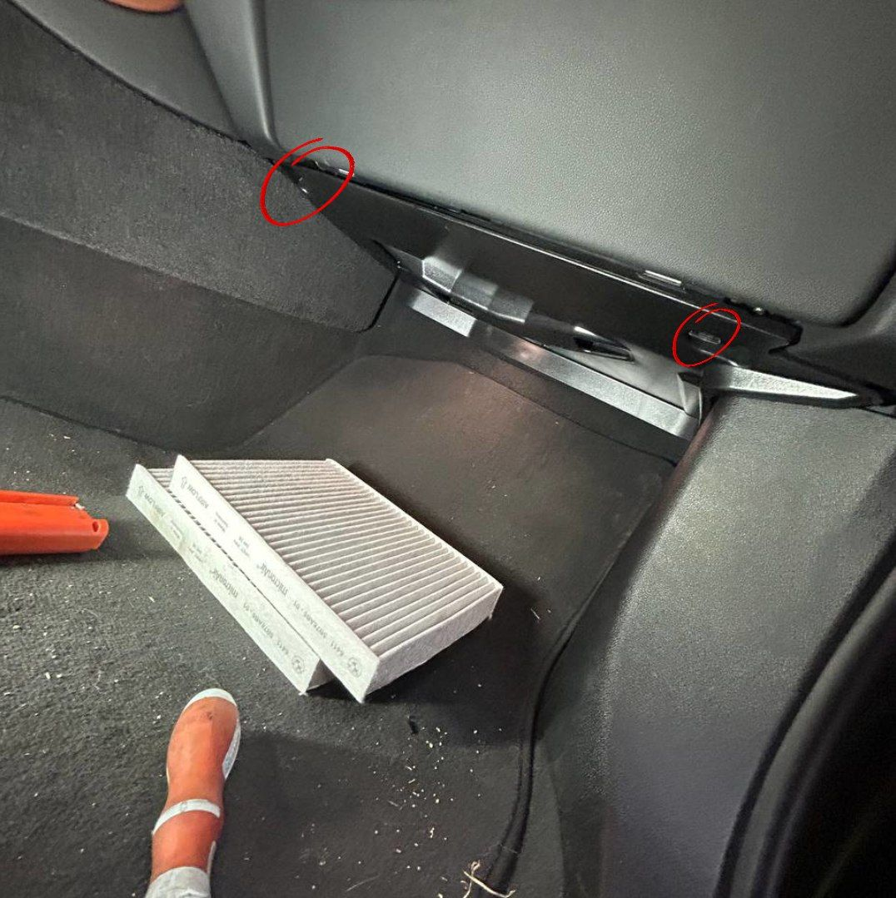
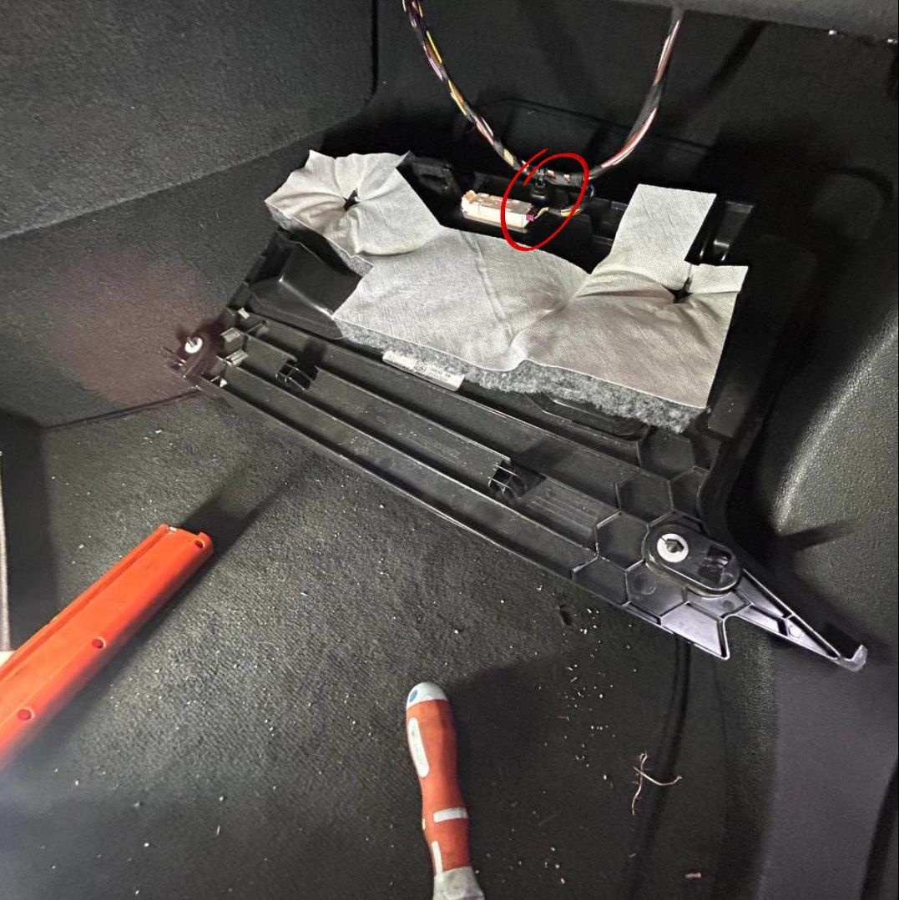
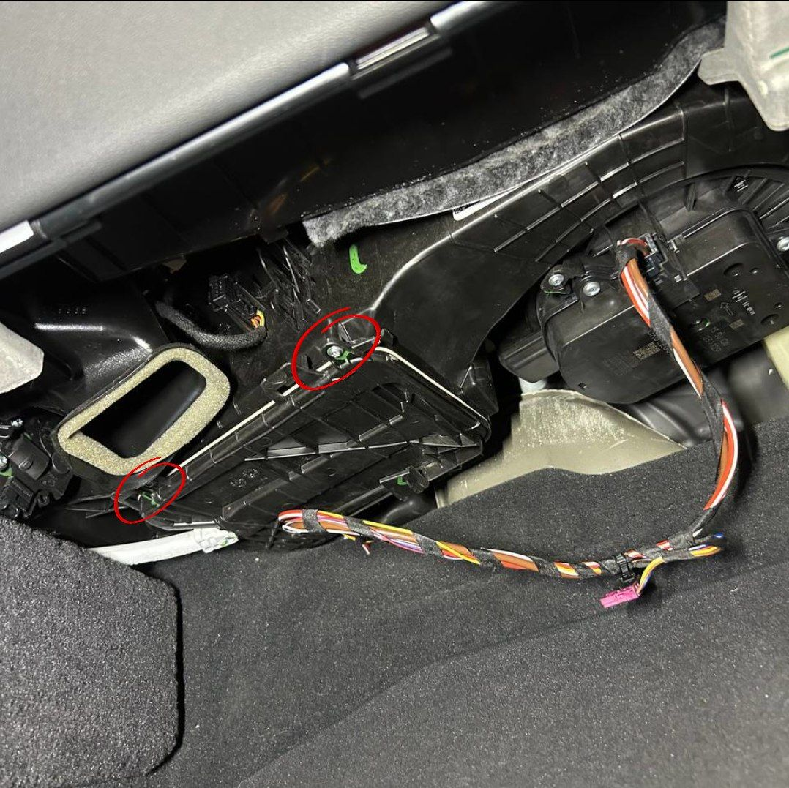
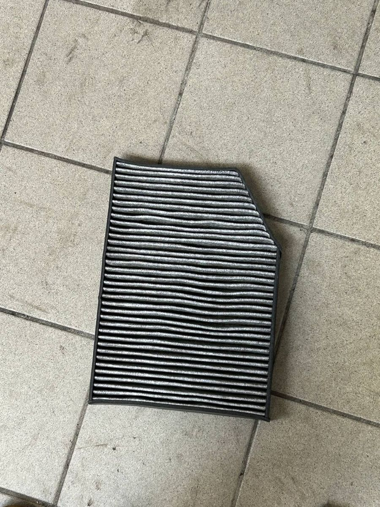

Home / Fluids and filters
BMW Cabin Air Filter: Location and How to Replace It
Quick answer
On the BMW X5 in these photos, the cabin air filter sits under the dashboard on the passenger side, behind a lower trim panel and a plastic cover held by screws, usually T25 Torx. Depending on the model, the housing takes either one large filter or two small ones. Take off the trim, unplug its connector, remove the cover, swap the filter or filters with the airflow arrow pointing the right way and refit everything.

Where the cabin air filter is
On the X5 in these photos, the cabin air filter is under the dashboard on the passenger side. You reach it through the footwell, behind a lower trim panel and a plastic cover.
In my experience the job is very similar on many BMWs, including the 3, 5, 6 and 7 Series, the M models and the X5 and X7. Some cars have one large filter, others two smaller ones in the same housing, so check before you order parts. Covers and fasteners can differ between generations, so use your own manual as the final word.
What you need
- A T25 Torx screwdriver or bit
- A plastic trim tool, so you don't scratch or crack the panel
- A new filter or filters for your exact car. Check the part number against your VIN in a parts catalog
- A small vacuum or a clean cloth for the housing
- A flashlight, and a place to keep the screws
How to replace it, step by step
1. Prepare the footwell
Switch the ignition off and move the passenger seat back. Clear the footwell and have somewhere to put the screws.
2. Release the lower trim panel
The red circles in the photo mark the points where the panel is held. Release them carefully with a plastic trim tool rather than a screwdriver. The two new filters lying on the floor are the ones this car takes.

3. Unplug the connector
There is a wiring connector on the panel (circled). Unplug it before the panel comes away completely, so you don't pull on the wiring.

4. Remove the cover
The cover over the filter housing is held by screws (circled). On the cars I work with, they are usually T25 Torx. Remove them and lift the cover off.

5. Take out the old filter or filters
Slide the old filter out and look at the arrow printed on its side, which shows the airflow direction. The new one must go in the same way. If there are two elements, note which one sits where.
6. Clean, fit and close up
Wipe or vacuum the housing before you fit the new filter. Check the arrow direction, refit the cover and its screws without over-tightening the plastic, plug the connector back in, refit the trim and test the fan.
What an old filter looks like
A filter that is dark, clogged with dust and leaves, or flattened has done its job and needs replacing. Weak airflow, a musty smell or windows that clear slowly are the usual signs.

How often to replace it
Follow your service schedule, and replace it sooner if you drive on dusty roads or the air smells stale. Many drivers do it about once a year.
Common mistakes
- Forcing the trim panel instead of finding the fixing point
- Forgetting to unplug the connector before the panel comes off
- Fitting the filter the wrong way round
- Over-tightening plastic screws
- Ordering the wrong part. One large filter and two small ones are not interchangeable
Safety note. Work with the ignition off. If your car has airbags or wiring under the dashboard, take your time and don't pull on cables.
FAQ
Where is the cabin air filter on a BMW?
On the car in these photos, an X5, it is under the dashboard on the passenger side, behind a lower trim panel and a cover. Other models differ, so check your manual.
What size screws hold the cabin filter cover?
On the cars I work with, they are usually T25 Torx. Check yours before you start.
Does the BMW take one filter or two?
Some models take one large filter, others two smaller ones. Check the old one before you buy.
Is the job the same on a 7 Series or an X7?
In my experience it is very similar on many larger BMWs, but covers and fasteners vary, so always confirm with your own manual.
How do I know which way the filter goes?
Look at the arrow printed on the side of the old filter. The new one should point the same way.
This guide is general information based on personal experience, not professional advice. Check your own car's manual for exact specs and read the disclaimer before starting any job.